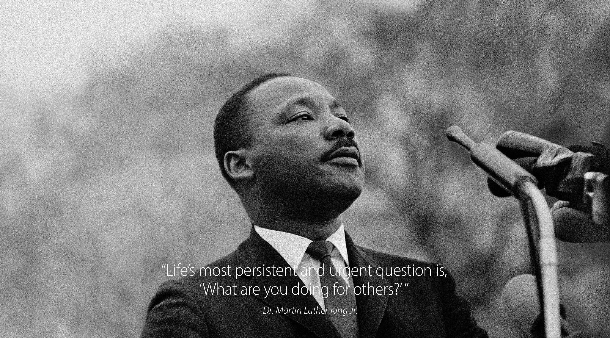

Dr. Martin Luther King Jr.

Dr king presenting
Timeline
- 1929Michael King is born in Atlanta. His father changes the boy’s name, as well as his own, to Martin Luther King several years later.
- 1944King begins his freshman year at Morehouse College in Atlanta.
- 1948King begins his studies at Crozer Theological Seminary in Chester, Pennsylvania.
- 1951King graduates from Crozer with a bachelor of divinity degree, delivering the valedictory address at commencement.
- 1954King begins his pastorate at Dexter Avenue Baptist Church in Montgomery, Alabama.
- 1955Rosa Parks is arrested for refusing to vacate her seat and move to the rear of a city bus in Montgomery to make way for a white passenger. Jo Ann Robinson and other Women’s Political Council members mimeograph thousands of leaflets calling for a one-day boycott of the city’s buses on Monday, 5 December.
- 1956At 9:15 p.m., while King speaks at a mass meeting, his home is bombed. His wife and daughter are not injured. Later King addresses an angry crowd that gathers outside the house, pleading for nonviolence.
- 1957Southern black ministers meet in Atlanta to share strategies in the fight against segregation. King is named chairman of the Southern Negro Leaders Conference on Transportation and Nonviolent Integration (later known as the Southern Christian Leadership Conference, SCLC).
- 1960King moves from Montgomery to Atlanta to devote more time to SCLC and the freedom struggle. He becomes assistant pastor to his father at Ebenezer Baptist Church.
- 1963The March on Washington for Jobs and Freedom attracts more than two hundred thousand demonstrators to the Lincoln Memorial. Organized by A. Philip Randolph and Bayard Rustin, the march is supported by all major civil rights organizations as well as by many labor and religious groups. King delivers his "I Have a Dream" speech. After the march, King and other civil rights leaders meet with President John F. Kennedy and Vice-President Lyndon B. Johnson in the White House.
- 1965In an event that will become known as "Bloody Sunday," voting rights marchers are beaten at the Edmund Pettus Bridge in Selma, Alabama as they attempt to march to Montgomery.
- 1967King publicly reveals his plans to organize a mass civil disobedience campaign, the Poor People's Campaign, in Washington, D.C., to force the government to end poverty.
- 1968King is shot and killed while standing on the balcony of the Lorraine Motel in Memphis.